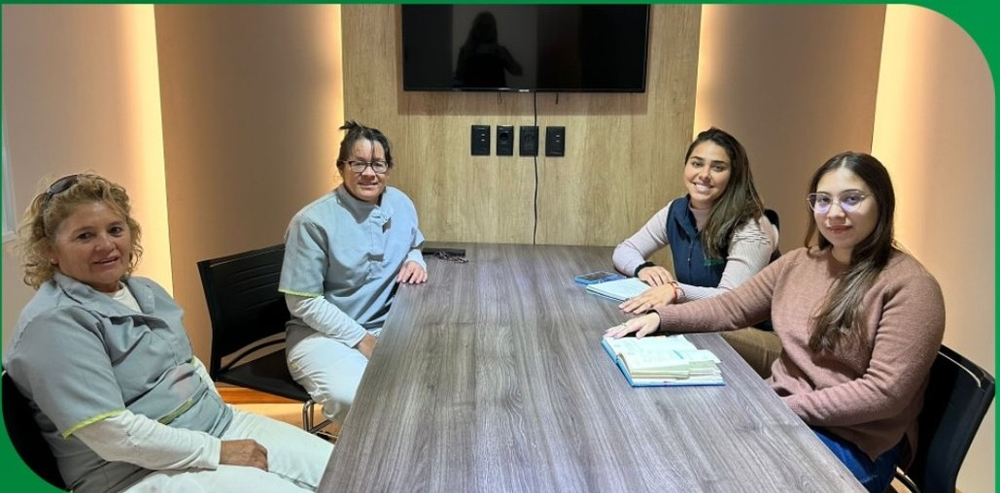

Virginia Ramirez
Licenciada en Economía
Desde 2011, cerca del trabajo
Escuchamos el espacio, coordinamos el alcance y revisamos el resultado con una mirada cercana.
¿Quiénes somos?
ASESPRO es una empresa de Paso de los Toros con 15 años de experiencia en limpieza integral. Trabajamos en edificios, comercios, hogares y oficinas, además de limpiezas de final de obra, con coordinación y supervisión de cada servicio.
Nuestra sede está en Florencio Sánchez 722, Paso de los Toros. También trabajamos en Montevideo, Punta del Este, Durazno y Mercedes.
Licenciada en Economía
Contadora
Socias Fundadoras y Directoras de ASESPRO
Lo que orienta cada decisión
La forma de trabajar se construye capítulo a capítulo: escuchar, sostener y revisar.


superando las expectativas de nuestros clientes en cada tarea, mientras minimizamos nuestro impacto ambiental.
construyendo relaciones sólidas y duraderas con nuestros clientes, basadas en la confianza y la transparencia, y contribuyendo a un entorno más limpio y saludable.
Responsabilidad · Calidad · Compromiso con el Medio Ambiente · Satisfacción del Cliente · Trabajo en Equipo
Mensaje de la dirección
Nuestra directora comparte cómo entendemos el servicio: escuchar al cliente, cuidar los detalles y revisar cada espacio al terminar.

Una forma de trabajar
Prepará una consulta y contanos qué necesitás cuidar.
Preparar consulta